VID Extension Kit
Author: Henrik Mikael Kristensen
Version: 0.0.3
Date: 09-Sep-2009
Contents:
IntroductionDocumentation Notes
Getting Started
Windows
Dialect
Setup
Default
Align
Fill
Spring
Validate
Required
Origin
Space
At
Aspect
Tab Navigation
How It's Done
Tabbing Order
Tab Face
Focus Ring
Examples
Requesters
Skin
VID Functions
Window
Pane
Face
Accessors
Special Style Features
Panel Switching
Panel Setting and Getting
Lists
Scrollers
Face Interaction
Key Formatting
Balancing
Enablers
Style Reference
Future
Thanks
Introduction
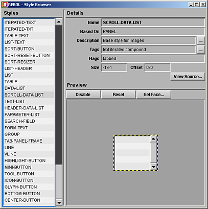
The VID Extension Kit extends the basic capabilities of VID, while fixing some style bugs.
The VID Extension Kit is:
- A collection of new styles for VID to make it more complete.
- Heavy modifications to existing styles to make them more flexible.
- A small set of rules defined to restrict, but also lift the capability of the user interface to a new level. This helps to:
- Simplify the creation, validation and data gathering of forms.
- Provide tabbed keyboard navigation.
- Provide a consistent skin across the entire UI using a single skin file.
- Provide full window resizing and face alignment extensions in the dialect.
- Give a user interface meaning and structure as opposed to being a bunch of faces, you have to address absolutely.
- Cleaner usage of accessors.
- A collection of functions for managing faces, such as:
- Very easy face traversal, moving back and forth, up and down in the face tree. Faces become a bit more aware of their surroundings, although not fully.
- Face traversal based on criteria, useful for finding a specific face by style, flag or any other method.
- Individual keyboard navigation per style, through the key-face* accessor.
- Disabling and enabling faces and panels, also with customizable disable-face* and enable-face* accessors per style.
- Validating INPUT faces and panels.
- A few new styles that are data-only, i.e. invisible styles that provide new operations to the dialect at parse time and connect faces. This is generally used for field validation for now.
- A collection of more sensible requesters that take full advantage of the new window layout, resizing and styles.
What the VID Extension Kit tries not to do:
- It does not try to fix "unfixable" low-level bugs with hundreds of lines of complicated hacks. If something is really hard to fix, it will not be fixed. The philosophy is "generally good design" over "capability at all costs".
- It does not use anti-aliased fonts.
- It does not provide overly flexible face/graphics layout. No transparent windows or other extensions to the layout engine on a lower level.
- It is not an exercise in superior GUI artwork. The VID Extension Kit goes for a Tcl/Tk like UI appearance, but only because it's easy to do and easy to make consistent.
This is not the GUI toolkit I was looking for
There are two famous alternatives to VID:
RebGUI by Ashley Trüter, it is a complete rewrite from the ground up to provide a new layout engine and a new style system. It can be found here. GLayout by Maxim Olivier-Adlhoch, it replaces the VID dialect layout while keeping its basic feature set. It can be found here.
Documentation Notes
In this document, certain typefaces are used:
FACE-STYLE-NAME are written in uppercased fixed width.
function-name are written in lowercased fixed width.
Program code is written in gray boxes.
All screenshots are grabbed from Windows XP.
Getting Started
To use the latest build of the VID Extension Kit, use the following line:
do http://97.107.135.89/projects/rebol/vid/src/builds/vid-ext-kit.rNote that the URL might change, so you may want to download it locally.
And you are ready to go! Be ware that you can't 'do the file again in the same console session.
Windows
Creating a window happens with the make-window function. This creates a resizable layout with tab navigation.
Example:
main: make-window [ across h3 "Main Window" return bar return label "Enter Name" field return ok-cancel ]To view the window:
view main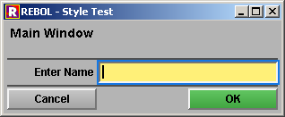
The use of LAYOUT provides a standard old-style VID window without keyboard navigation or resizing.
Dialect
There are a few additions to the dialect to facilitate easy access to resizing, alignment and face validation. For basic usage, refer to the original VID Manual.
The additions involve additional words that are available per style for resizing, face setup and defaults:
Setup
Some faces have settings that are complex enough to warrant a setup word in addition to setting colors, size, etc. This for example counts for lists and panels with multiple panes.
Setup can vary between styles, as some are simple data blocks, where others are complete dialects, which describe complex aspects of the face behavior. This is wholly defined by the style in the setup-face* accessor and can in some cases be set using the setup-face function.
Examples
view make-window [ panel setup [ general [ h1 "General" ... General setup layout here... ] network [ h1 "Network" ... network setup layout here... ] printer [ h1 "Printer" ... printer setup layout here... ] ] ]Note that this list style has not yet been implemented but will be in the near future.
people: [ "Luke Lakeswimmer" 24 "Han Sulu" 31 "Anakin Lakeswimmer" 46 ] view make-window [ list-view setup [ source people header [name age] sort age descending scrollers [vertical horizontal] ] ]
Default
A face which can have a value set, can now also have a separate default value, using the default keyword.
When using the reset-face function, the value was usually cleared in the original VID and it was considered that the value set during layout, was the default.
This has been changed to a specific separate default value, which you can set during layout. Instead, the value you set beyond the default one, can be seen as an initial value, one that only occurs when the layout has been created.
Examples
This will not set an initial value in the field, but when the button is clicked, the field is set to its default value.
view make-window [ field default "Default value" button "Set default" [reset-face back-face face] ]This example shows that an initial value is different from a default value.
view make-window [ field "Initial value" default "Default value" button "Set default" [reset-face back-face face] ]Defaults can be applied both to single faces and whole panels.
Align
Align occurs at layout time and at no other time. It determines how a face should be aligned inside its parent face. Since it only aligns at layout time, a face that is right aligned right when the window is displayed, may no longer be right aligned, when the parent face or the window is resized.
Not using the align keyword results in using the default alignment for the style. If there is no align information at all, then the layout engine will not attempt any alignment, defaulting to normal layout. The default for VID-FACE is none.
Alignment happens with a block of up to four words:
TOP This is default and places the top edge of the face near the top edge of the parent face, minus origin spacing. BOTTOM This places the bottom edge of the face near the bottom edge of the parent face, minus origin spacing. LEFT This is default and places the left edge of the face near the left edge of the parent face, minus origin spacing. RIGHT This places the right edge of the face near the right side of the parent face, minus origin spacing. CENTER This places the face at the center of the parent face. At no time will the alignment attempt to place the face edges outside the parent-face, unless there is too little room for the face.
You can freely combine the words. A combination of top and bottom or left and right will respectively place the face at the vertical or horizontal middle of the parent face.
The align word is also used for aligning text. Giving a word instead of a block, will align the face text instead of the face itself.
Examples
button align [right bottom]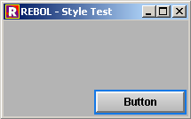
button align [left right]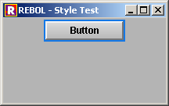
button align [top bottom]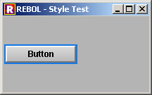
button align [center]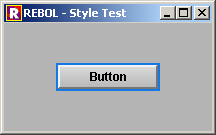
Fill
Fill occurs at layout time and at no other time. It determines whether to fill the remaining space from the current offset to the edge of the parent face minus spacing. This is given as a pair! value of either 0 or 1 in the specified direction. For example 0x1 means fill vertically.
Not using the fill keyword results in using the default fill for the style. The default fill for VID-FACE 0x0.
Examples
button fill 0x0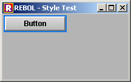
button fill 1x0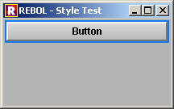
button fill 0x1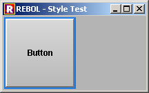
button fill 1x1
This example shows that filling takes place from the offset point of the face to the right and/or bottom sides of the parent face.
at 30x0 button fill 1x0
Current Limitations for Align and Fill
The alignment process does a few things to automate alignment of faces, but some alignments are not possible to do, since faces are generally not aware of the positions of each-other in this resizing system.
When using align on two faces that are right next to each other, both faces will ignore each other and simply align to the parent face:
view make-window [ across button 150 align [right] button align [right] ]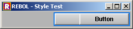
Also, the layout engine will still apply the normally necessary cursor movement in preparation for placing the next face, even if the specified alignment will not place the face near that position at all. This can be seen here, where the second button should be at the location of the first button:
view make-window [ panel 200x200 [ across button align [bottom] button ] ]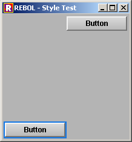
The way to solve this, is to use the at keyword, to place the face that was unintentionally moved:
view make-window [ panel 200x200 [ across button align [bottom] at 0x0 button ] ]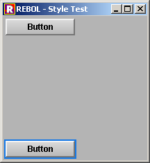
When using fill, the face will be filled unconditionally to the edge of its parent, and thus may layout on top of other faces:
view make-window [ across box "Red Box" red fill 1x0 box "Yellow Box" yellow fill 0x1 return button 150 ]As seen in the two examples above, it's also sometimes necessary to specify the size of the face. This goes for cases where you can't use fill to get the size you want.
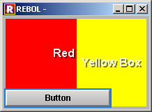


Spring
Spring has to do with resizing only and is processed every time the layout is resized. It is not used during layout.
Springs are atomic: They are either there or they are not. There are no inbetweens or weighting for springs. There are four springs, one for each side of the face, you want to apply springs to.
When applying a spring, the distance between the face and the parent face varies linearly 1:1 with the parent face edge on the same side. When two springs on opposite sides are applied, the distance varies linearly 1:2.
Not using springs, causes the use of the springs set by default for the style. The default springs for VID-FACE (the overall base face for all styles) is [right bottom].
The springs:
TOP This places a spring above the face. It's useful in cases where you want a face to stay near the bottom of the parent face. LEFT This places a spring to the left of the face RIGHT This places a spring to the right of the face. This is default for VID-FACE. BOTTOM This places a spring below the face. This is default for VID-FACE. When using the top and bottom springs or left and right springs in combination, similarly to align, the face can be kept near the center of the window. More accurately, what happens is that the spring adjustment is divided evenly in half for both sides.
Examples
This causes the buttom to vary its distance to the top of its parent:
button spring [top]This is default for VID-FACE:
button spring [bottom right]This varies the distance between the spring and the left side of the parent face:
button spring [left]This causes the button never to resize:
button spring [top bottom left right]This causes the button to follow the parent face size on all sides:
button spring noneGeneral Example
Combining fill, align and spring provides the full subset of features necessary to create a fully resizable layout.
This is a base layout that works well with putting a list in the left side and content selected from the list in the right side, such as what the style browser uses. The layout consists of a left panel that only adjusts vertically and a right panel that adjusts vertically and horizontally without moving its offset:
view make-window [ across panel spring [right] [ box 100x200 spring none blue "Left" ] panel spring none [ box 200x170 spring none green "Right" box 200x28 spring [top] red "Bottom" at 0x0 ; to avoid blank space box 40x30 orange align [top right] spring [left bottom] ] return box 0x30 fill 1x0 spring [top] gray "Button Area" ]Explanation
- The first panel has only a right spring, to keep it from resizing up horizontally. Since there are no other springs, the three other sides will follow the size of the parent sides respectively.
- The second panel has no springs in order to follow all four sides of the parent. Note that this means the distance to the parent sides is therefore always constant.
- The blue box has no springs, to wholly follow the size of the parent panel. There is no alignment, since it sits in the upper left corner of the parent face and there is no fill, as the size of the box defines the size of the parent face, so it automatically fills the whole parent face.
- The green box must follow all sides of the parent face to
- The orange box will align to the top right on top of the green box. It will not resize due to the left and bottom springs. Instead the springs will cause it to stay at the top right of the green box. Note the use of at 0x0 before the orange box is declared; This is to avoid the box creating a space between the bottom of the green box and the top of the gray box as the layout engine normally would. Placing the orange box at 0x0 prior to alignment will not cause the problem to occur.
- The gray box has a fill to calculate the horizontal size in relation to its parent face, which is the window. It has a specific vertical size, and the horizontal size is simply ignored (here set to 0). The top spring makes sure it stays at the bottom. There is no alignment, because the initial position happens to be correct for the box in this layout.
Original size:
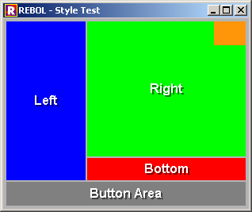
After resizing it down:
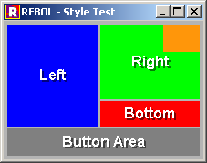
After resizing it up:
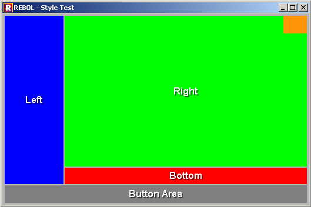
Validate
The validate keyword has a block argument that holds the code to determine what the correct validation for the face is. You can return any value, but it's processed as logic! internally. When logically true, the face is valid. If false, the face is invalid.
Validation occurs on unfocusing the face.
Example
field validate [not empty? get-face face]Good Validation Principles
Validation makes the most sense, when using the VALID-INDICATOR style for validation as well as the presence of a TRUE-BUTTON face, such as that seen in the USE-CANCEL style. This allows the VID Extension Kit to perform validation as automatically as possible.
Whenever a window is opened, initial condition validation is performed. This ensures that faces that are required for validation have their VALID-INDICATORs properly marked up. This makes the form ready for initial use.
Examples
This uses the VALID-INDICATOR style to indicate whether the face is valid or not. Note that the VALID-INDICATOR must be positioned immediately after the face to be validated.
view make-window [ across field validate [not empty? get-face face] valid-indicator ]When initial condition validation is performed, before the fields are touched by the user:
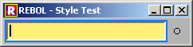
After validation (by pressing tab):

Required
The required keyword is part of validation. When used, a validation failure will cause an overall error, that considers the form not to be valid for submission. If not used, validation may fail, but is not critical and the form can still be submitted.
The required keyword does not work without a validate block.
Example
Field may not be empty:
field required validate [not empty? get-face face]When used in combination with the VALID-INDICATOR style, you get more substantial results:
view make-window [ across field required validate [not empty? get-face face] valid-indicator ]When initial condition validation is performed, before the fields are touched by the user:
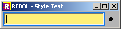
After validation (by pressing tab):
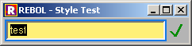
After validation failure (by deleting content and pressing tab):
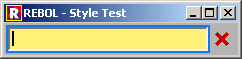
The Validation Object
Whenever the validate keyword is used, a validation object, called face/valid is created for the face:
make object! [ action: ; the block to be run for validation result: none ; the result of the validation required: false ; whether the face must pass validation ]face/valid/result can be one of 4 values:
NOT-REQUIRED The face is not required for validation. This is used if the face fails validation or does not require validation, because it's disabled. Failure is not critical. This would be displayed in the VALID-INDICATOR. REQUIRED The face is required for validation, but has not yet been validated. This would show after opening the window. In this case face/valid/required would be true. INVALID The validation failed critically for the face and this would block closing the window. VALID The face has been validated and is valid. Prepare for Submission
The submission process is manually handled by you, but in order to get there, the VID Extension Kit can use specific submission buttons to let you know in a simple way whether it's OK to submit the form.
This takes place in the form of a TRUE-BUTTON. You can use the TRUE-BUTTON directly, but a derivative located inside one of the standard button panels, such as USE-CANCEL or OK-CANCEL, offers a more complete solution.
Example
view make-window [ across field required validate [not empty? get-face face] valid-indicator return true-button "Submit" ]Before touching the form, the initial condition validation has been done:
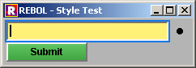
When clicking the submit button without entering anything in the field, the window remains open and the error is indicated:
When entering a string in the field and then pressing the submit button, the window is closed, because the form is now valid.
To see, how the submitted result is handled, please visit the Returning from View Windows and Informs in the Special Style Features section below.
General Examples
This example shows a simple form:
empty-field: [not empty? get-face face] numeric-field: [attempt [to-integer get-face face]] view make-window [ across label "First Name" field required validate empty-field valid-indicator return label "Last Name" field required validate empty-field valid-indicator return label "Age" field validate numeric-field valid-indicator return label "Comment" field validate empty-field valid-indicator return use-cancel ]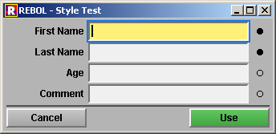
If you click "Use" without entering data, the window will stay open and indicate which fields are invalid and focus the first invalid field:
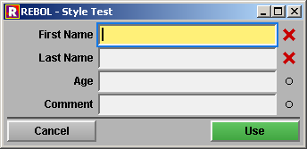
This example is the same, only there are ENABLER faces in the layout:
view make-window [ across label "First Name" enabler true field required validate empty-field valid-indicator return label "Last Name" enabler field required validate empty-field valid-indicator return label "Age" enabler field validate numeric-field valid-indicator return label "Comment" enabler field validate empty-field valid-indicator return use-cancel ]Read more about the ENABLER style in the Special Style Features section below.
NOTE: In this screenshot, disabled fields do not appear disabled due to unimplemented effects. This will be fixed in a later build.
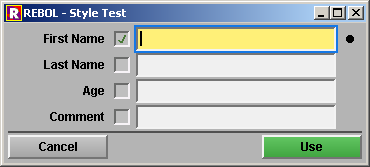
Current Limitations
Due to limitations in next-face, back-face and traverse-face, it's not possible to validate across several panes in a panel. You can only validate the currently visible pane.
Origin
The origin keyword is always a pair and is usually given during layout time, either by you or internally by the LAYOUT function. This allows alignment to use the correct distance to the bottom and right edges of the parent face.
Origin is set for the parent face and then used to place faces inside that parent face. The fill and align keywords take origin information into account.
view make-window [origin 4 button button]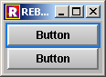
view make-window [origin 8 button button]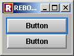
Space
This defines the spacing between faces during a normal layout situation. The standard size is 4x4 pixels. It can be defined both as an integer!, used in both directions, or as a pair!.
Space is set for the individual panel levels. This means when defining a new panel, the spacing inside it, will be the default 4x4 pixels.
Space has no effect on spring, align or fill.
view make-window [space 4 button button return button button]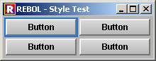
view make-window [space 12 button button return button button]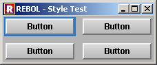
At
The at keyword is used to place faces at specific locations during layout time. The input is a pair!. When this happens, layout is temporarily moved to that face until the next face is to be layed out.
This affects fill, but is overwritten by align. It does not affect spring.
Aspect
The aspect keywords sets fixed aspect for the face. In combination with fill, the face will be resized with a fixed aspect ratio. Fixed aspect ratio is usable in styles where you need to display a scalable print preview or a picture and you don't want to stretch it unintentionally.
The aspect ratio itself is derived from the original size of the face. This is useful in cases where you would set the face to a specific image and want to keep the aspect ratio fixed throughout the time this image is displayed. When switching to a different image, the aspect ratio would change, but again remain fixed there during resizing.
There are 4 modes for fill when aspect is enabled:
0x0 Fixed aspect resizing is ignored. 0x1 Fixed aspect calculation is done according to vertical size of parent-face as reference. The result is a face that stays vertically in the confines of the parent face. If the horizontal size of the face is bigger than the parent face, it will go outside the parent face. 1x0 Fixed aspect calculation is done according to horizontal size of parent-face as reference. The result is a face that stays horizontally in the confines of the parent face. If the vertical size of the face is bigger than the parent face, it will go outside the parent face. 1x1 Fixed aspect calculation is done according to both vertical and horizontal size of parent-face as reference. The result is a fixed aspect face that stays within the confines of the parent face no matter the aspect of the parent face. Example
This will make the box center and scale between the top and bottom and the horizontal size is then scaled for aspect. This means if the aspect ratio is lower than that of the box, the box will be clipped in the sides, but stay centered.
view make-window [ box "+" red edge [size: 2x2] ; for visibility spring [left right] ; horizontal center fill 0x1 ; fill to top and bottom in parent-face aspect ; fixed aspect for this face ]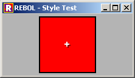
Tab Navigation
Tab navigation involves simply using the Tab key or Shift-Tab key combination to tab to a specific face. If the face is an editable field, it's focused for editing. If the face does not contain editable text, you can still use the Space key to invoke the action of the face throug a simulated mouse-click, or whatever key navigation is possible through the key-face* accessor for the face.
If a face normally can be tabbed to, but is disabled, the face is skipped.
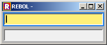
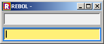
How It's Done
Tab navigation is possible thanks to these features:
- make-window installs a set of 4 faces that works as a blue focus ring. This focus ring sits at the tail of the window pane, and it's moved, shown and hidden by internal functions. It also stores the tab-face for the window. Each window has its own tab-face and moving between several tab navigated faces should not cause focus to be lost.
- Global window detect function that serves as the single place to handle the Tab and Space key. There is no need for you to make special arrangements to get tab navigation working.
- next-face and back-face functions help determine which face to focus next. This is done using their /deep refinements.
- Tabbed flag helps only selecting faces that are suitable for tab navigation. You want, for example, to skip the BAR face or text labels, when tabbing.
- The key-face* accessor allows you to provide custom navigation options for a single face. DATA-LIST for example, allows the use of cursor keys to navigate up and down in a focused list.
- tab-face in each window face to store the current tab-face. Multiple windows have each their own tab-face.
- Various rules come into play, helping to determine which face should be focused on window open using the init-window function, the form validation process or panel change.
Tabbing Order
The order of tabbing is decided from the order of faces in the face tree. If the face pane contains 4 faces, the first one is focused first, then the second one and then the third and so on.
If any face has a sub pane, each sub pane is investigated for focusable faces and it will focus those. The pane level for tabbing can be infinitely deep.
Tabbing backward goes exactly in reverse of tabbing forward.
Tabbing is done using the next-face/deep and back-face/deep functions.
Current Limitations
At this time, it's not possible to set a custom tabbing order.
Tab Face
The tab-face for a given window can be reached through the window root face, either by accessing the window face directly, or by using get-tab-face on a face in the window, if you don't know the window face. The tab-face is simply the face currently in focus by the focus ring.
Focus Ring
The focus ring consists of four separate faces, both for speed, as four small faces are faster to draw than one big face, and also due to limitations in the event model in that you can't click to focus through a face with the mouse.
The focus ring color is determined from system/view/vid/vid-colors/focus-ring-color
Examples
Use Tab to navigate between button and fields. Use Space on button to clear the fields.
view make-window [ panel [ across label "First Name" field return label "Last Name" field return ] button "Clear" [clear-face back-face face] ]
Requesters
There are various types of requesters. All requesters are blocking, which means the program does not continue, until the requester is closed.
The list of requesters is small, but growing:
MESSAGE To display a message with a single Close button and a specific image. Returns FALSE. NOTIFY Displays a notification window with a notification icon and a single close button. Returns FALSE. ALERT Displays an alert window with an alert icon. REQUEST To display a question with a true and false button. Returns TRUE or FALSE, depending on which button was clicked. REQUEST-COLOR This displays a window with RGB sliders to select a standard RGB tuple. Returns NONE on no selection or a tuple on selection. More to come in later builds.
Skin
The VID Extension Kit does more to collect all information about colors, fonts, gradients in a single place for easy editing. This could be referred to as a skin system, but at this time, it globally affects all windows, and there is no system in place to handle multiple skins.
However there are formal descriptions of edges, colors and effects. These are made from a purpose driven scheme ("action color"), rather than a description scheme ("red color"), to associate them with the styles more appropriately.
The color list exists in system/view/vid/vid-colors and is as follows:
vid-colors: context [ focus-ring-color: 20.120.230 font-color: reduce [black focus-ring-color - 75] important-font-color: reduce [white focus-ring-color + 75] body-text-color: black title-text-color: black field-color: snow field-select-color: yello window-background-color:180.180.180 menu-color: window-background-color + 20 frame-background-color: window-background-color - 20 line-color: window-background-color - 100 menu-text-color: [0.0.0 0.75.150 255.255.255] important-color: 180.40.0 manipulator-color: 200.200.200 action-color: 200.200.200 true-color: 80.180.80 false-color: 180.180.180 action-colors: reduce [action-color action-color] disabled-action-colors: reduce [action-color - 50 action-color - 50] ]A global shortcut to these colors is in svvc.
This concept is not entirely followed through. For example, much of the design of a button is stored in the BUTTON style itself. This is due to its nature of heavy use of face/feel/redraw, which constantly manipulates the colors and gradients directly.
Also certain styles may directly retrieve the calculated color when a face is created in layout, losing the reference to system/view/vid/vid-colors which prevents us from changing the color in real-time.
VID Functions
Many new functions have been created for easing the finding of faces in a big layout and managing windows and panes. They are the back bone for many of the new capabilities of VID, such as tab navigation. Most of these functions also end in *-face, but are not related to accessor functions.
Window
Windows functions are meant to help in the creation and maintenance of windows.
activate-window
Activates the given window.
display-window
This displays a face as a window and manages the face in the window list.
do-window
Performs a method on the given window, such as activate, maximize, etc.
focus-default-input
This focuses the first input face with a default flag set. This is used during the execution of init-window. This also sets the focus ring.
focus-first-input
This focuses the first input face. This is used during the execution of init-window, usually after a failed focus-default-input. This also sets the focus ring.
focus-first-false
This focuses the first face, which identifies as a false face, such as FALSE-BUTTON. This also sets the focus ring. This is used in cases without an input face, such as simple dialogs, where quick key access to a cancel button is the correct method.
flag-face
This sets a flag for a VID face.
flag-face?
This checks for the presence of a specific flag in a VID face.
init-enablers
This initializes all ENABLER styles inside the window.
init-window
This performs window initialization during VIEW. The ENABLER faces are set, forms are initialized, and it's decided which face to focus first. All operations are done prior to display. A /focus refinement determines which face to specifically focus on window open.
layout
This creates a simple layout from the given dialect block.
make-window
This creates a resizable window with tab navigation capabilities, focus ring from the given dialect block and stores the tab-face for the face.
maximize-window
Maximizes the given window.
popup?
Returns whether the window is a popup, shown by inform. This is used when closing the window programmatically via hide-popup rather than hide.
vid-window?
Determines if the given face is a VID window, i.e. investigates whether the focus ring exists and the style is window.
view
This displays a pre-existing layout created with MAKE-WINDOW or LAYOUT.
window-open?
Determines if a specific window is visible.
Pane
find-face
Returns the pane for the face, for use when figuring out where the face is in the pane.
set-parent-faces
This function is very important. It sets the parent face for any given face in any layout. As a main rule, in the VID Extension Kit, all faces must have a valid parent face. This function helps that to happen in the creation of windows and panes for panels.
Face
back-face
Finds the face prior to the current one in the same pane. Has refinement /deep to traverse one step backward deeply in the layout.
click-face
This simulates a mouse click on a face. This is used during tab navigation, when you press Space to click a button.
describe-face
This is a quick way to dump important information from a face, when a fatal error occurs.
find-flag
This finds a face with a specific flag set, relative to the given face.
find-relative-face
Finds a specific face relative to a given face, traversing deeply and using specific criteria. Has refinement /reverse to move backwards in the layout.
find-style
Finds a face by style name, relative to the given face. Has refinement /reverse to move backwards in the layout.
focus
This focuses a specific face without setting the focus ring. It runs the on-focus key formatter.
get-tab-face
Returns the tab face for the window in which the given face resides.
get-tip-face
Used internally to find the last face in the last pane inside a pane. This is used to determine for traverse-face, when the pane has been traversed.
inside-face?
Returns whether a given face exists inside the pane of another face. This is used when switching pane in a panel, and you want to make sure that any face that was tab focused there, is properly unfocused.
iterated-face?
This determines if the given face is correctly set for iteration. If it returns true, then the face has a proper iteration function.
iterated-pane
This is a uniform way to evaluate the first entry in an iterated face. It is used to determine subfaces inside an iterated face.
move-face
This moves the upper left corner of the face without disturbing the lower right corner of the face. Thus the face is both moved and resized.
next-face
Finds the face next to the current one in the same pane. Has refinement /deep to traverse one step forward deeply in the layout.
restore-flags
This restores the flag setup for the given face from face/saved-flags, saved by save-flags. This is used for functions that manipulate the feel of the face, such as disable-face.
root-face
Returns the window in which the given face resides.
save-face
Saves the content of the current focal-face being edited.
save-flags
Saves the flag setup for the given face in face/saved-flags. This is used for functions that manipulate the feel of the face, such as disable-face.
traverse-face
Traverses the pane of a face deeply and performs an action on each found face.
unfocus
This removes key event focus from a face and runs the on-unfocus key formatter. It does not alter the focus ring.
validate-face
This validates a single face or a whole window. It's used internally to perform initial condition validation on window open, when a TRUE-BUTTON validates the window and when a single face is validated when pressing Tab.
Accessors
setup-face
This sets the face up, if the face supports setup. This counts for faces that may have sophisticated panes or elements that are allowed to dynamically change during its lifetime.
set-face
This sets the face value.
get-face
This returns the face value.
reset-face
This resets the face to its default value.
key-face
This sends a key event to the face, so it can be processed internally. For example, you can process the cursor keys in a list view separately from the global key handlers in window/feel/detect. For key-face to work, the face must be tab-focused, but it is not required that the cursor is present for editing.
scroll-face
This scrolls the face vertically or horizontally. The style can use separate functions for each direction.
disable-face
This disables a previously enabled face. The face will appear "dulled" and is no longer accepting user input or tabbing. It can, however, still be managed with setup-face, set-face and get-face.
enable-face
This enables a previously disabled face.
save-face
This saves the content of the face and thus makes it possible to do a GET-FACE. This is useful if you are writing in a field and then click a button without unfocusing the field by hand.
Special Style Features
Some styles provide special features that require an in-depth explanation.
Panel Switching
Panels are capable of providing multiple panes. You can specify the panes directly in layout:
view make-window [ p: panel setup [ general [ h1 "General" ... General setup layout here... ] network [ h1 "Network" ... network setup layout here... ] printer [ h1 "Printer" ... printer setup layout here... ] ] ]When using multiple panes, the panel is resized after the largest pane. When you want to switch the pane, you use SET-FACE on the panel, along with a word that matches the pane name:
set-face p 'printerWhen only one panel is defined like normally, the pane name is 'default.
Panel Setting and Getting
When getting and setting data, you most likely want to do it in large chunks, for example when doing it for many fields in a form.
Lists
Lists are much more capable and come in several levels of usage. Here is a brief list:
LIST Basic vertically iterated face DATA-LIST Provides a list with selectable rows, but no scroller PARAMETER-LIST Two-column list setup, meant for displaying object contents.
Scrollers
Scrollers can automatically attach to faces that contain the SCROLLABLE flag.
This example demonstrates automatic attachment:
letters: [a b c d e f g h i j k l m n o p q r s t u v w x y z] view make-window [ across data-list 100x300 with [source: :letters] scroller ]You can then attach a second scroller, which will then control the horizontal movement for the list. We will then need to provide a more complex source.
view make-window [ across data-list 100x300 with [source: :letters] scroller with [fill: none] 20x300 return scroller 100x20 ]Under normal circumstances, you should not need to customize scrolling, but it's possible to do.
Scrolling occurs internally using the SCROLL-FACE function. The SCROLL-FACE function calls the scroll-face* accessor in the face to be scrolled. Parameters for direction and step size are given.
The scroll-face* accessor then provides instructions for how the face to scroll should change, scrolling vertically or horizontally. For a DATA-LIST, scrolling vertically results in the data list starting index to be moved, while scrolling horizontally results in the subface for the data list to be moved to a new offset.
Face Interaction
As a new concept, face interaction is the consolidation of handling all programmatic interactions with a face through their accessors. This is a rule, that should be followed. Some faces generally expose three different attributes:
Setup The setup of the face. For a SELECTOR, that would be the buttons used. This only counts for faces that need to construct a specific layout inside themselves. PANELs and FACE-CONSTRUCTs do this too. This is handled through the setup-face function. The face would hold the value internally in setup. Default The default value of the face. For any face this is handled with RESET-FACE. Value This is the value set for the face. This is handled with SET-FACE and GET-FACE. A typical style setup for general interaction:
MY-FACE: FACE with [ access: make object! [ set-face*: func [face value] [ face/data: value ] get-face*: func [face] [ face/data ] setup-face*: func [face value] [ face/pane: layout/tight process value ] reset-face*: func [face] [ face/set-face* face/default ] ] ]
Key Formatting
Fields provide key formatters. This is real-time replacement of text, altering of highlight and caret position as you perform key presses or, when using the Enter or Tab key. The idea is to use this for auto-completion, string replacement, capitalization, numeric only fields, etc.
To provide a key formatter, you determine when you want to use the formatter:
on-key Formatter is applied on each key press on-return Formatter is applied each time Enter is pressed. This makes it possible to apply a formatter without leaving a field. on-tab Formatter is applied when Tab is pressed, just before leaving the field. on-set Formatter is applied when using SET-FACE on the field on-escape Formatter is applied when pressing the Escape key on-focus Formatter is applied when focusing on-unfocus Formatter is applied when unfocusing Formatter definitions are read as a function name and an argument. If the formatter does not require arguments, none should be passed.
Examples
This provides a field that automatically capitalizes the first char and subsequent chars that come after a space.
view make-window [ field on-key [capitalize none] ]This auto-completes from a list of names. Just start typing and matching letters will complete the field.
names: [ "eenie" "meenie" "miney" "moe" ] view make-window [ field on-key [auto-complete names] ]You can provide multiple formatters sequentially:
view make-window [ field on-key [auto-complete names capitalize none] ]You can also provide your own formatters. Each formatter is a function of the format:
format-func: func [face event value] [ ... perform formatting ... make object! [ text: ...altered text... highlight-start: ...altered highlight start... highlight-end: ...altered highlight end... caret: ...altered caret position... ] ]The name of the function is used in the layout definition block.
Balancing
There are two new faces that provide balancing between two panels of faces. Given how they work, it's necessary to explain them here.
Balancer
The balancer style is usually placed between two panels, but any resizable face can be used. When you pull it up or down, left or right, depending on the intended resize direction, which is autodetected, the panel before and after are resized so that the space that all three faces occupy remain the same. The balancer will not go beyond the edges of both panels.
The balancer only works properly, when the panels before and after it are placed logically before and after the balancer in the pane.
Example:
view make-window [ across box red "1" balancer box orange "2" ]As calculated by the layout:
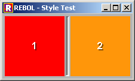
When moving the balancer to the right:
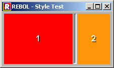
Resizer
The resizer is also placed between two faces, but where it will resize the panel before it, the remaining faces that come after it, are simply moved. This style is extensively used in the list-header style to resize columns.
Like balancer, resizer only works properly when situated between the faces that need to be resized and moved.
view make-window [ across box red "1" resizer box blue "2" resizer box orange "3" ]As calculated by the layout:
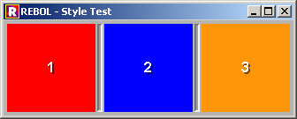
When moving the first resizer to the right:
When moving the second resizer as far to the left as possible:
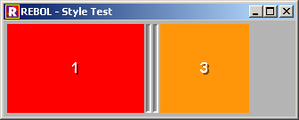
The second face is not lost. It was simply horizontally sized to zero:


Enablers
An ENABLER is a checkbox like face, that enables or disables a face that comes right after it. This is used in cases where a face needs to represent many values, such as in a form that allows mass-editing of table rows.
When an enabler is enabled, the following happens:
- The next face is enabled and focused.
- Initial condition for validation is set.
When an enabler is disabled, the following happens:
- The next face is disabled and unfocused.
- Validation is turned off for this face. If the form is validated, this face is skipped.
- The face is cleared.
Example
view make-window [across enabler field validate [empty? get-face face]]
Style Reference
There is currently no style reference. In its place is the style browser, which can be invoked here:
do http://97.107.135.89/projects/rebol/vid/tools/style-browser.r
Future
The VID Extension Kit and its documentation is very incomplete, and so the work must continue on:
- Making it simpler, more consistent and cleaner
- Making more styles
- Fix a lot of bugs
- Finish documentation
Thanks
Thanks must go to:
Anton Rolls Brian Hawley Maxim Olivier-Adlhoch Graham Chiu Carl SassenrathFor their gracious help and assistance.